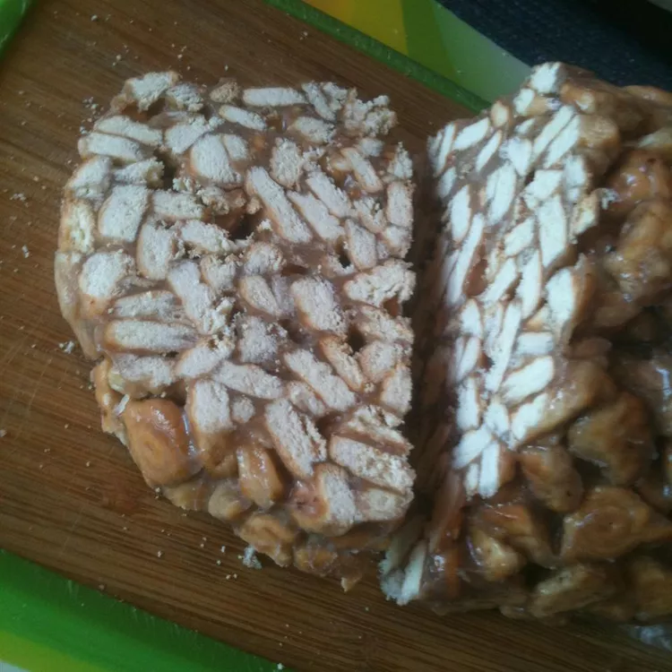

Even though it is very much alike the famous Italian chocolate salami, this simple, no-bake dessert, translated as the lazy man is regarded as an authentic Lithuanian delicacy. It is prepared with a blend of crumbled cookies, cocoa, condensed milk, butter, and sugar, shaped into the desired form, and left to set. According to a widely accepted anecdote, tinginys was created by accident, but immediately became the nations favorite. Because of its neutral taste, it is easily adjusted with additional ingredients, such as nuts or dry fruit. It is recommended to enjoy tinginys with a cup of coffee or tea on the side.
For this recipe you will need the following ingredients
These are the steps to make the dish